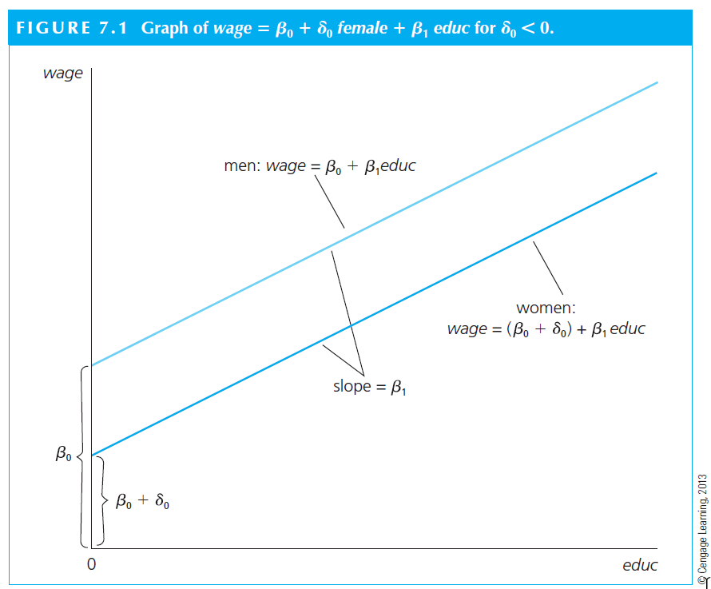

library(ggplot2)
library(ggthemes)
library(readxl)
library(jtools) # for nice tables of models - https://cran.r-project.org/web/packages/jtools/vignettes/summ.html#summ
data <- read_excel("files/data.xls")
library(dplyr)
data <- data %>% group_by(id ) %>% dplyr::mutate(id_firm = cur_group_id())
data <- data %>% group_by(setor_economatica) %>% dplyr::mutate(id_ind = cur_group_id())
library(plm)
data <- pdata.frame(data, index=c("id_firm","year"))
attach(data)
# variables
data$lev1 <- Debt / (Debt + Equity.market.value)
data$lev2 <- Debt / Total.Assets
data$wc_ta <- wc / Total.Assets
data$cash_ta <- cash / Total.Assets
data$div_ta <- Dividends / Total.Assets
data$fcf_ta <- Free.cash.flow / Total.Assets
data$tang_ta <- tangible / Total.Assets
data$roa2 <- roa / 100
library(SciViews)
data$size1 <- ln(Total.Assets)
# winsor
library(DescTools)
data$w_lev1 <- Winsorize(data$lev1 , probs = c(0.01, 0.99) , na.rm = TRUE)
data$w_lev2 <- Winsorize(data$lev2 , probs = c(0.01, 0.99) , na.rm = TRUE)
data$w_wc_ta <- Winsorize(data$wc_ta , probs = c(0.01, 0.99) , na.rm = TRUE)
data$w_cash_ta <- Winsorize(data$cash_ta, probs = c(0.01, 0.99) , na.rm = TRUE)
data$w_size1 <- Winsorize(data$size1 , probs = c(0.01, 0.99) , na.rm = TRUE)
data$w_fcf_ta <- Winsorize(data$fcf_ta , probs = c(0.01, 0.99) , na.rm = TRUE)
data$w_div_ta <- Winsorize(data$div_ta , probs = c(0.01, 0.99) , na.rm = TRUE)
data$w_roa <- Winsorize(data$roa , probs = c(0.01, 0.99) , na.rm = TRUE)
data$w_tang_ta <- Winsorize(data$tang_ta, probs = c(0.01, 0.99) , na.rm = TRUE) Empirical Methods in Finance
Practicing 7
Henrique C. Martins
Setup
Reverse causation
- Imagine that you want to investigate the effect of Governance on Q
\(ùë∏_{i} = Œ± + ùú∑_{i} √ó Gov + Controls + error\)
The ideal is to establish estimates that allow you to infer that changing Gov will CAUSE a change in Q. However, without a nice empirical design, we cannot infer causality
One source of bias is: reverse causation
Perhaps it is Q that causes Gov
OLS based methods do not tell the difference between these two betas:
\(ùëÑ_{i} = Œ± + ùú∑_{i} √ó Gov + Controls + error\)
\(Gov_{i} = Œ± + ùú∑_{i} √ó Q + Controls + error\)
- If one Beta is significant, the other will most likely be significant too.
Lags to mitigate reverse causation
In a regression model, there is always the possibility that it is Y that causes X, meaning that your assumptions about the relationship of these variables can always be wrong (i.e., what causes what?).
We are not discussing causality yet (which is a whole new chapter). But one possible simple solution is to use lagged values of your X. Something along the following lines:
\[Y_{t,i} = \alpha + \beta \times X_{t-1,i} + \epsilon_{t,i}\]
Notice the subscript \(t-1\) in x now. It means that you are using the previous period’s value of X as explanatory variable of the current period’s value of Y.
This type of structure mitigates the concern that variations in Y are the reason of why X varies since it is less likely that the current variation of Y provokes variations on X in the previous years (i.e., the idea is that the future does not affect the past).
Lags to mitigate reverse causation
This is not a perfect solution because Y and X in most accounting and finance research designs are usually auto-correlated, meaning that the previous values are correlated with the present value.
For instance, the firm’s leverage of 2015 is highly correlated with the firm’s leverage of 2016.
But in many cases it is a good idea to use lag values. At least, you should have this solution in your toolbox.
Lags to mitigate reverse causation
fe <- plm(w_lev1 ~ w_size1 + w_fcf_ta + w_roa + w_tang_ta + w_cash_ta + w_div_ta + factor(year) , data = data, model="within")
lag <- plm(w_lev1 ~ lag(w_size1) + lag(w_fcf_ta) + lag(w_roa) + lag(w_tang_ta) + lag(w_cash_ta) + lag(w_div_ta) + factor(year) , data = data, model="within")
export_summs(fe, lag, coefs = c("w_size1","w_div_ta","w_fcf_ta","w_roa","w_tang_ta","w_cash_ta",
"lag(w_size1)","lag(w_div_ta)","lag(w_fcf_ta)", "lag(w_roa)","lag(w_tang_ta)","lag(w_cash_ta)"), digits = 3 , model.names = c("FE","FE with lags") )| FE | FE with lags | |
| w_size1 | 0.076 *** | |
| (0.004) | ||
| w_div_ta | -0.894 *** | |
| (0.152) | ||
| w_fcf_ta | 0.453 *** | |
| (0.117) | ||
| w_roa | -0.009 *** | |
| (0.001) | ||
| w_tang_ta | 0.176 *** | |
| (0.019) | ||
| w_cash_ta | -0.304 *** | |
| (0.029) | ||
| lag(w_size1) | 0.083 *** | |
| (0.005) | ||
| lag(w_div_ta) | -0.833 *** | |
| (0.163) | ||
| lag(w_fcf_ta) | 0.042 | |
| (0.128) | ||
| lag(w_roa) | -0.004 *** | |
| (0.001) | ||
| lag(w_tang_ta) | 0.135 *** | |
| (0.020) | ||
| lag(w_cash_ta) | -0.260 *** | |
| (0.031) | ||
| nobs | 6885 | 6032 |
| r.squared | 0.215 | 0.197 |
| adj.r.squared | 0.086 | 0.057 |
| statistic | 57.872 | 46.689 |
| p.value | 0.000 | 0.000 |
| deviance | 108.418 | 92.542 |
| df.residual | 5914.000 | 5132.000 |
| nobs.1 | 6885.000 | 6032.000 |
| *** p < 0.001; ** p < 0.01; * p < 0.05. | ||
First difference models
Alternatively, we can estimate a first difference model as follows.
\[\Delta Y_{t,i} = \alpha + \beta \times \Delta X_{t,i} +\ epsilon_{t,i}\]
Where, \(\Delta Y_{t,i} =Y_{t,i} - Y_{t-1,i}\) and \(\Delta X_{t,i} =X_{t,i} - X_{t-1,i}\)
\(\beta\) shows the difference in the average change of Y for units that experience a change in x during the same period.
Saying the same thing in a different way, \(\beta\) shows how much y changes, on average, where and when X increases by one unit.
Let’s say that x is binary and it changes from 0 to 1 for each firm during several different periods. So, y will change, on average, by \(\beta\) when x changes from 0 to 1.
First difference models
fe <- plm(w_lev1 ~ w_size1 + w_fcf_ta + w_roa + w_tang_ta + w_cash_ta + w_div_ta + factor(year) , data = data, model="within")
fd <- plm(w_lev1 ~ w_size1 + w_fcf_ta + w_roa + w_tang_ta + w_cash_ta + w_div_ta + factor(year) , data = data, model="fd")
export_summs(fe, fd, coefs = c("w_size1","w_div_ta","w_fcf_ta","w_roa","w_tang_ta","w_cash_ta") , digits = 3, model.names = c("FE","FD"))| FE | FD | |
| w_size1 | 0.076 *** | 0.097 *** |
| (0.004) | (0.005) | |
| w_div_ta | -0.894 *** | -0.182 |
| (0.152) | (0.104) | |
| w_fcf_ta | 0.453 *** | 0.195 * |
| (0.117) | (0.092) | |
| w_roa | -0.009 *** | -0.005 *** |
| (0.001) | (0.001) | |
| w_tang_ta | 0.176 *** | 0.142 *** |
| (0.019) | (0.018) | |
| w_cash_ta | -0.304 *** | -0.127 *** |
| (0.029) | (0.025) | |
| nobs | 6885 | 5942 |
| r.squared | 0.215 | 0.218 |
| adj.r.squared | 0.086 | 0.214 |
| statistic | 57.872 | 58.794 |
| p.value | 0.000 | 0.000 |
| deviance | 108.418 | 81.641 |
| df.residual | 5914.000 | 5913.000 |
| nobs.1 | 6885.000 | 5942.000 |
| *** p < 0.001; ** p < 0.01; * p < 0.05. | ||
Binary variables
As mentioned before, a Fixed effect is equivalent to a binary variable marking one group of observations. For instance, all observations of the same year, or from the same firm.
We can explore many interesting types of binary variables in most cases of corporate finance. For instance, whether the firm is included in “Novo Mercado”, if the firm has high levels of ESG, etc.
The implementation of a binary variable is quite simple: it takes the value of 0 for one group, and 1 for the other.
The interpretation is a bit trickier.
Binary variables
Let’s think about the example 7.1 of Wooldridge. He estimates the following equation:
\[wage = \beta_0 + \delta_1 female + \beta_1 educ + \mu\]
In model (7.1), only two observed factors affect wage: gender and education. Because \(female = 1\) when the person is female, and $female = 0 $ when the person is male, the parameter \(\delta_1\) has the following interpretation:
- \(\delta_1\) is the difference in hourly wage between females and males, given the same amount of education (and the same error term u). Thus, the coefficient \(\delta_1\) determines whether there is discrimination against women: if \(\delta_1<0\), then, for the same level of other factors, women earn less than men on average.
Binary variables
In terms of expectations, if we assume the zero conditional mean assumption E(\(\mu\) | female,educ) = 0, then
\(\delta_1 = E(wage | female = 1, educ) - E(wage | female = 0, educ)\)
Or
\(\delta_1 = E(wage | female, educ) - E(wage | male, educ)\)
- The key here is that the level of education is the same in both expectations; the difference, \(\delta_1\) , is due to gender only.
Binary variables
The visual interpretation is as follows. The situation can be depicted graphically as an intercept shift between males and females. The interpretation relies on \(\delta_1\). We can observe that \(delta_1 < 0\); this is an argument for existence of a gender gap in wage.
Binary variables
Using our own example, we can make the case that it is necessary to separate the firms in two groups: dividend payers and non-payers.
There is literature suggesting that dividend payers are not financially constrained, while those firms that do not pay dividends are.
If financial constrain is something important to our model (and assuming that the right way to control for it is by including a dividend payer dummy), we should include such a dummy.
Binary variables
\[Lev_{t,i} = \alpha + \beta_1 \times Size_{t,i} + \beta_2 \times Div.\;payer_{t,i} + controls + \epsilon_{t,i}\]
We could estimate this model as follows.
data$w_div_payer <- ifelse(data$w_div_ta <= 0, 0, 1)
tapply(data$w_div_ta, data$w_div_payer, summary) # Summary by group using tapply$`0`
Min. 1st Qu. Median Mean 3rd Qu. Max.
-2.087e-05 0.000e+00 0.000e+00 -4.538e-07 0.000e+00 0.000e+00
$`1`
Min. 1st Qu. Median Mean 3rd Qu. Max.
0.0000000 0.0003314 0.0048639 0.0134473 0.0160092 0.0997752 fe1 <- plm(w_lev1 ~ w_size1 + w_div_ta + w_fcf_ta + w_roa + w_tang_ta + w_cash_ta + factor(year) , data = data, model="within")
fe2 <- plm(w_lev1 ~ w_size1 + w_div_payer + w_fcf_ta + w_roa + w_tang_ta + w_cash_ta + factor(year) , data = data, model="within")
export_summs(fe1, fe2, coefs = c("w_size1","w_div_ta","w_div_payer","w_fcf_ta","w_roa","w_tang_ta","w_cash_ta") , digits = 3, model.names = c("FE 1","FE 2"))| FE 1 | FE 2 | |
| w_size1 | 0.076 *** | 0.079 *** |
| (0.004) | (0.004) | |
| w_div_ta | -0.894 *** | |
| (0.152) | ||
| w_div_payer | -0.036 *** | |
| (0.005) | ||
| w_fcf_ta | 0.453 *** | 0.458 *** |
| (0.117) | (0.117) | |
| w_roa | -0.009 *** | -0.009 *** |
| (0.001) | (0.001) | |
| w_tang_ta | 0.176 *** | 0.177 *** |
| (0.019) | (0.019) | |
| w_cash_ta | -0.304 *** | -0.297 *** |
| (0.029) | (0.029) | |
| nobs | 6885 | 6885 |
| r.squared | 0.215 | 0.218 |
| adj.r.squared | 0.086 | 0.089 |
| statistic | 57.872 | 58.733 |
| p.value | 0.000 | 0.000 |
| deviance | 108.418 | 108.072 |
| df.residual | 5914.000 | 5914.000 |
| nobs.1 | 6885.000 | 6885.000 |
| *** p < 0.001; ** p < 0.01; * p < 0.05. | ||
Models with squared variables
Let’s say you have a variable that should not show a clear linear relationship with another variable.
For instance, consider ownership concentration and firm value. There is a case to be made the relationship between these variable is not linear. That is, in low levels of ownership concentration (let’s say 5% of shares), a small increase in it might lead to an increase in firm value. The argument is that, in such levels, an increase in ownership concentration will lead the shareholder to monitor more the management maximizing the likelihood of value increasing decisions.
But consider now the case where the shareholder has 60% or more of the firm’s outstanding shares. If you increase further the concentration it might signals the market that this shareholder is too powerful that might start using the firm to personal benefits (which will not be shared with minorities).
Models with squared variables
If this story is true, the relationship is (inverse) u-shaped. That is, at first the relationship is positive, then becomes negative.
Theoretically, I could make an argument for a non-linear relationship between several variables of interest in finance. Let’s say size and leverage. Small firms might not be able to issue too much debt as middle size firms. At the same time, large firms might not need debt. The empirical relationship might be non-linear.
There is always a potential case to be made regarding the relationship between the variables.
Models with squared variables
The way to empirically test it is as follows:
\[Y_{t,i} = \alpha + \beta_1 \times X_{t,i} + \beta_2 \times X^2_{t,i} + \epsilon_{t,i}\]
Or using the size-leverage example:
\[Lev_{t,i} = \alpha + \beta_1 \times Size_{t,i} + \beta_2 \times Size^2_{t,i} + controls + \epsilon_{t,i}\] As Wooldridge says, misspecifying the functional form of a model can certainly have serious consequences. But, in this specific case, the problem seems minor since we have the data to fix it.
Models with squared variables
In this specific case, our theory does not hold, since the squared term is not significant. So we can conclude that in this model, the relationship is linear.
data$w_size1_sq <- data$w_size1 * data$w_size1
fe <- plm(w_lev1 ~ w_size1 + w_size1_sq + w_fcf_ta + w_roa + w_tang_ta + w_cash_ta + w_div_ta + factor(year) , data = data, model="within")
export_summs(fe, coefs = c("w_size1","w_size1_sq","w_div_ta","w_fcf_ta","w_roa", "w_tang_ta","w_cash_ta") , digits = 3)| Model 1 | |
| w_size1 | 0.157 *** |
| (0.043) | |
| w_size1_sq | -0.002 |
| (0.001) | |
| w_div_ta | -0.894 *** |
| (0.152) | |
| w_fcf_ta | 0.453 *** |
| (0.117) | |
| w_roa | -0.009 *** |
| (0.001) | |
| w_tang_ta | 0.174 *** |
| (0.019) | |
| w_cash_ta | -0.305 *** |
| (0.029) | |
| nobs | 6885 |
| r.squared | 0.216 |
| adj.r.squared | 0.087 |
| statistic | 56.024 |
| p.value | 0.000 |
| deviance | 108.353 |
| df.residual | 5913.000 |
| nobs.1 | 6885.000 |
| *** p < 0.001; ** p < 0.01; * p < 0.05. | |
Models with Interactions
In some specific cases, you want to interact variables to test if the interacted effect is significant. For instance, you might believe that, using Wooldridge very traditional example 7.4., women that are married are yet more discriminated in the job market. So, you may prefer to estimate the following equation.
\[wage = \beta_0 + \beta_1 female + \beta_2 married + \beta_3 female.married + \mu\]
Where \(maried\) is a binary variable marking all married people with 1, and 0 otherwise.
In this setting, the group of single men is the base case and is represented by \(\beta_0\). That is, both female and married are 0.
The group of single women is represented by \(\beta_0 + \beta_1\). That is, female is 1 but married is 0.
The group of married men is represented by \(\beta_0 + \beta_2\). That is, female is 0 but married is 1.
Finally, the group of married women is represented by \(\beta_0 + \beta_1 + \beta_2 + \beta_3\). That is, female and married are 1.
Models with Interactions
Using a random sample taken from the U.S. Current Population Survey for the year 1976, Wooldridge estimates that \(female<0\), \(married>0\), and \(female.married<0\). This result makes sense for the 70s.
library(wooldridge)
data('wage1')
wage1$fem_mar <- wage1$female * wage1$married
wage<- lm(lwage ~ female + married + fem_mar + educ + exper + expersq + tenure + tenursq , data = wage1)
export_summs(wage, coefs = c("(Intercept)", "female","married","fem_mar") , digits = 3)| Model 1 | |
| (Intercept) | 0.321 ** |
| (0.100) | |
| female | -0.110 * |
| (0.056) | |
| married | 0.213 *** |
| (0.055) | |
| fem_mar | -0.301 *** |
| (0.072) | |
| N | 526 |
| R2 | 0.461 |
| *** p < 0.001; ** p < 0.01; * p < 0.05. | |
Linear probability model
When the dependent variable is binary we cannot rely on linear models as those discussed so far. We need a linear probability model. In such models, we are interested in how the probability of the occurrence of an event depends on the values of x. That is, we want to know \(P[y=1|x]\).
Imagine that y is employment status, 0 for unemployed, 1 for employed. This is our Y. Imagine that we are interested in estimating the probability that a person start working after a training program. For these types of problem, we need a linear probability model.
\[P[y=1|x] = \beta_0+\beta_1x_1+\beta_2x_2+...+\beta_kx_k\]
The mechanics of estimating these model is similar to before, except that Y is binary.
The interpretation of coefficients change. That is, a change in x changes the probability of y = 1. So, let’s say that \(\beta_1\) is 0.05. It means that changing \(x_1\) by one unit will change the probability of y = 1 (i.e., getting a job) in 5%, ceteris paribus.
Linear probability model
Using Wooldridge’s example 7.29:
library(wooldridge)
data('mroz')
lpm <- lm(inlf ~ nwifeinc + educ + exper + expersq + age + kidslt6 + kidsge6 , data = mroz)
export_summs(lpm, coefs = c("(Intercept)", "nwifeinc" , "educ" , "exper" , "expersq" , "age" ,"kidslt6" , "kidsge6"), digits = 3 , model.names = c("LPM"))| LPM | |
| (Intercept) | 0.586 *** |
| (0.154) | |
| nwifeinc | -0.003 * |
| (0.001) | |
| educ | 0.038 *** |
| (0.007) | |
| exper | 0.039 *** |
| (0.006) | |
| expersq | -0.001 ** |
| (0.000) | |
| age | -0.016 *** |
| (0.002) | |
| kidslt6 | -0.262 *** |
| (0.034) | |
| kidsge6 | 0.013 |
| (0.013) | |
| N | 753 |
| R2 | 0.264 |
| *** p < 0.001; ** p < 0.01; * p < 0.05. | |
Linear probability model

The relationship between the probability of labor force participation and educ is plotted in the figure below. Fixing the other independent variables at 50, 5, 30, 1 and 6, respectively, the predicted probability is negative until education equals 3.84 years. This is odd, since the model is predicting negative probability of employment given a set of specific values.

Linear probability model
Another example. The model is predicting that going from 0 to 4 kids less than 6 years old reduces the probability of working by \(4\times 0.262 = 1.048\), which is impossible since it is higher than 1.
That is, one important caveat of a linear probability model is that probabilities might falls off of expected empirical values. If this is troublesome to us, we might need a different solution.
Logit and Probit
Although the linear probability model is simple to estimate and use, it has some limitations as discussed. If that problem is important to us, we need a solution that addresses the problem of negative or higher than 1 probability. That is, we need a binary response model.
In a binary response model, interest relies on the response probability.
\[P(y =1 | x) = P(y=1| x_1,x_2,x_3,...)\]
That is, we have a group of X variables explaining Y, which is binary. In a LPM, we assume that the response probability is linear in the parameters \(\beta\). This is the assumption that created the problem discussed above.
Logit and Probit
We can change that assumption to a different function.
- A logit model assumes a logistic function (\(G(Z)=\frac{exp(z)}{[1+exp(z)]}\))
- A probit model assumes a standard normal cumulative distribution function (\(\int_{-inf}^{+z}\phi(v)dv\))
The adjustment is something as follows.
\[P(y =1 | x) = G(\beta_0 + \beta_1 x_1+ \beta_2 x_2 + \beta_3 x_3)\] Where G is either the logistic (logit) or the normal (probit) function.
We don’t need to memorize these functions, but we need to understand the adjustment that assuming a different function makes. Basically, **we will not predict negative or above 1 values anymore because the function adjusts at very low and very high values*.
Logit and Probit
Logit and Probit
Let’s estimate a logit and probit to compare with the LPM.
lpm <- lm(inlf ~ nwifeinc + educ + exper + expersq + age + kidslt6 + kidsge6 , data = mroz)
logit <- glm(inlf ~ nwifeinc + educ + exper + expersq + age + kidslt6 + kidsge6 , data = mroz,family = binomial)
probit <- glm(inlf ~ nwifeinc + educ + exper + expersq + age + kidslt6 + kidsge6 , data = mroz, family = binomial(link = probit))
export_summs(lpm , logit, probit, coefs = c( "nwifeinc" , "educ" , "exper" , "expersq" , "age" ,"kidslt6" , "kidsge6", "(Intercept)"), digits = 4 , model.names = c("LPM","Logit","Probit"))| LPM | Logit | Probit | |
| nwifeinc | -0.0034 * | -0.0213 * | -0.0120 * |
| (0.0014) | (0.0084) | (0.0049) | |
| educ | 0.0380 *** | 0.2212 *** | 0.1309 *** |
| (0.0074) | (0.0434) | (0.0254) | |
| exper | 0.0395 *** | 0.2059 *** | 0.1233 *** |
| (0.0057) | (0.0321) | (0.0188) | |
| expersq | -0.0006 ** | -0.0032 ** | -0.0019 ** |
| (0.0002) | (0.0010) | (0.0006) | |
| age | -0.0161 *** | -0.0880 *** | -0.0529 *** |
| (0.0025) | (0.0146) | (0.0085) | |
| kidslt6 | -0.2618 *** | -1.4434 *** | -0.8683 *** |
| (0.0335) | (0.2036) | (0.1184) | |
| kidsge6 | 0.0130 | 0.0601 | 0.0360 |
| (0.0132) | (0.0748) | (0.0440) | |
| (Intercept) | 0.5855 *** | 0.4255 | 0.2701 |
| (0.1542) | (0.8604) | (0.5081) | |
| N | 753 | 753 | 753 |
| R2 | 0.2642 | ||
| AIC | 865.7847 | 819.5303 | 818.6044 |
| BIC | 907.4013 | 856.5228 | 855.5969 |
| Pseudo R2 | 0.3482 | 0.3494 | |
| *** p < 0.001; ** p < 0.01; * p < 0.05. | |||
Logit and Probit
Importantly, in a LPM model, the coefficients have similar interpretations as usual. But logit and probit models lead to harder to interpret coefficients.
In fact, often we do not make any interpretation of these coefficients. Instead, we usually transform them to arrive at an interpretation that is similar to what we have in LPM.
To make the magnitudes of probit and logit roughly comparable, we can multiply the probit coefficients by 1.6, or we can multiply the logit estimates by .625.
Also, the probit slope estimates can be divided by 2.5 to make them comparable to the LPM estimates.
At the end of the day, the interpretation of the logit and probit outputs are similar to LPM’s.
Tobit
Another problem in the dependent variable occurs when we have a limited dependent variable with a corner solution.
That is, a variable that ranges from zero to all positive values.
For instance, hours working. Nobody works less than zero hours, but individuals in the population can work many number of positive hours.
When we have such type of dependent variable, we need to estimate a tobit model.
Tobit
Using Wooldridge’s example 17.2.
library(AER)
lpm <- lm(hours ~ nwifeinc + educ + exper + expersq + age + kidslt6 + kidsge6 , data = mroz)
tobit <- tobit(hours ~ nwifeinc + educ + exper + expersq + age + kidslt6 + kidsge6 , data = mroz)
summary(tobit)
Call:
tobit(formula = hours ~ nwifeinc + educ + exper + expersq + age +
kidslt6 + kidsge6, data = mroz)
Observations:
Total Left-censored Uncensored Right-censored
753 325 428 0
Coefficients:
Estimate Std. Error z value Pr(>|z|)
(Intercept) 965.30528 446.43614 2.162 0.030599 *
nwifeinc -8.81424 4.45910 -1.977 0.048077 *
educ 80.64561 21.58324 3.736 0.000187 ***
exper 131.56430 17.27939 7.614 2.66e-14 ***
expersq -1.86416 0.53766 -3.467 0.000526 ***
age -54.40501 7.41850 -7.334 2.24e-13 ***
kidslt6 -894.02174 111.87804 -7.991 1.34e-15 ***
kidsge6 -16.21800 38.64139 -0.420 0.674701
Log(scale) 7.02289 0.03706 189.514 < 2e-16 ***
---
Signif. codes: 0 '***' 0.001 '**' 0.01 '*' 0.05 '.' 0.1 ' ' 1
Scale: 1122
Gaussian distribution
Number of Newton-Raphson Iterations: 4
Log-likelihood: -3819 on 9 Df
Wald-statistic: 253.9 on 7 Df, p-value: < 2.22e-16 OLS concerns
Heteroscedasticity
One of the key assumptions in OLS estimators is that \(var(\mu|x_1,x_2,x_3,...) = \sigma^2\). That is, the assumption is that the variance of the errors is homoskedastic (present constant variance). It means that throughout all observations, the error term shows the same variance \(\sigma^2\). If errors are not homoskedastic, we have the Heteroscedasticity problem.
Heteroskedasticity does not cause bias or inconsistency in the OLS estimators of the \(\beta\) like the OVB would. It also does not affect the \(R^2\). What Heteroscedasticity does is to bias the standard errors of the estimates.
Remember again that \(t_{\beta} = \frac{\hat{\beta}}{se(\hat{\beta})}\). So, if you have biased standard errors, you will not assess correctly the significance of your coefficients. It also affects the F statistics.
Graphically, we can think as follows.
Heteroscedasticity
Example of homoscedasticity:
Heteroscedasticity
Example of heteroscedasticity:

Heteroscedasticity
To give you more context, think in terms of the relationship that we’ve discussing \(leverage=f(size)\).
It is quite possible that small firms will have less options of leverage than large companies.
This means that a subsample of large companies will have higher variance in the leverage decisions (and thus the error terms) than the subsample of small firms.
So, we need to correct somehow the heteroskedasticity problem to find unbiased standard errors for the independent variable size in this model.
Heteroscedasticity
The solution to this problem is to estimate Robust standard errors. Basically, we will need to change the estimator of the standard error to an unbiased version.
We used to estimate (theoretical, populational):
\[var(\hat\beta_1) = \frac{\sum_{i=1}^n(x_1-\bar{x}^2) \sigma^2_i}{SST^2_x}\]
But now we would estimate (sample).
\[var(\hat\beta_1) = \frac{\sum_{i=1}^n(x_1-\bar{x}^2) \mu^2_i}{SST^2_x}\]
This is called White-Robust standard error or the Heteroscedasticity-Robust standard error and was first showed by White (1980).
Heteroscedasticity
Before we estimate a model with robust standard errors, let’s visually check if there is heteroskedasticity in the errors of the model. I am using Wooldridge’s example 8.1.
library(dplyr)
library(sandwich)
library(lmtest)
wage1<-wage1 %>% mutate(marmale = case_when(female == 0 & married == 1 ~ 1,
female == 0 & married == 0 ~ 0,
female == 1 & married == 1 ~ 0,
female == 1 & married == 0 ~ 0) )
wage1<-wage1 %>% mutate(marrfem = case_when(female == 0 & married == 1 ~ 0,
female == 0 & married == 0 ~ 0,
female == 1 & married == 1 ~ 1,
female == 1 & married == 0 ~ 0) )
wage1<-wage1 %>% mutate(singfem = case_when(female == 0 & married == 1 ~ 0,
female == 0 & married == 0 ~ 0,
female == 1 & married == 1 ~ 0,
female == 1 & married == 0 ~ 1) )
wage_t <- lm(lwage ~ marmale + marrfem + singfem + educ + exper + expersq + tenure + tenursq , data = wage1)
library(tidyverse)
library(broom)
fitted_data <- augment(wage_t, data = wage1)
ggplot(fitted_data, aes(x = .fitted, y = .resid)) + geom_point() + geom_smooth(method = "lm") + theme_solarized()Heteroscedasticity
Heteroscedasticity
Visually, we do not see much variation in the error term throughout the x axis. Not much evidence of heteroskedasticity.
But let’s formally test it using the Breusch-Pagan test.
The H_0 of this test is for homoskedasticity. Thus, if we reject the test, heteroskedasticity is present.
The estimated p-value is 10.55%, above the usual levels. We can conclude that heteroskedasticity is not present is such model.
Heteroscedasticity
Let’s estimate both standard errors to see their difference. Because we do not see much heteroskedasticity we should not see much difference in the estimated standard errors.
wage_r <- coeftest(wage_t, vcov = vcovHC)
export_summs(wage_t, wage_r, coefs = c("(Intercept)", "marmale","marrfem","singfem", "educ" , "exper" ,"expersq" , "tenure" , "tenursq" ) , digits = 4 ,model.names = c("Traditional S.E.", "Robust S.E."))| Traditional S.E. | Robust S.E. | |
| (Intercept) | 0.3214 ** | 0.3214 ** |
| (0.1000) | (0.1115) | |
| marmale | 0.2127 *** | 0.2127 *** |
| (0.0554) | (0.0582) | |
| marrfem | -0.1983 *** | -0.1983 *** |
| (0.0578) | (0.0597) | |
| singfem | -0.1104 * | -0.1104 |
| (0.0557) | (0.0579) | |
| educ | 0.0789 *** | 0.0789 *** |
| (0.0067) | (0.0076) | |
| exper | 0.0268 *** | 0.0268 *** |
| (0.0052) | (0.0052) | |
| expersq | -0.0005 *** | -0.0005 *** |
| (0.0001) | (0.0001) | |
| tenure | 0.0291 *** | 0.0291 *** |
| (0.0068) | (0.0074) | |
| tenursq | -0.0005 * | -0.0005 |
| (0.0002) | (0.0003) | |
| N | 526 | 526 |
| R2 | 0.4609 | |
| *** p < 0.001; ** p < 0.01; * p < 0.05. | ||
Heteroscedasticity
Notice that the standard errors have changed a bit, but not too much in this example.
Usually, the robust standard errors are larger than the traditional ones in empirical works, but they could be smaller.
Also notice that most of the independent variables have similar significance levels, but some have less significance.
This is expected, since the robust standard errors are expected to be larger (but again not always).
A final note, the standard errors estimates here are a bit different than those in Wooldridge I am assuming this is due to the package that I am using.
Finally, it is often common and most widely accepted to estimate the robust standard errors instead of the traditional ones.
Multicollinearity
Multicollinearity is the term used when many of the independent variables in a model are correlated.
This problem is not clearly formulated in econometrics book due to its nature.
But one thing is evident: multicollinearity increases the standard errors of the coefficients
In a sense, this problem is similar to having a small sample, from which is hard (in a statistical sense, meaning high standard deviation) to estimate the coefficient.
As Wooldridge says: everything else being equal, for estimating \(\beta_j\), it is better to have less correlation between \(x_j\) and the other independent variables.
Multicollinearity
We can use the following test to verify if multicollinearity exists: variance inflation factor (VIF).
There is no formal threshold to interpret the test, but 10 is usually accepted as appropriate.
That is, if there is one or more variables showing a VIF of 10 or higher, the interpretation is that there is evidence of multicollinearity.
Multicollinearity
We can observe below that the experience variables are multicolinear. This is expected since one is the squared root of the other.
marmale marrfem singfem educ exper expersq tenure tenursq
2.393377 2.138194 1.860638 1.166333 17.185652 15.707207 8.100194 7.218910 Assuming that expersq is important to be included in the model, there is not much we can do in this example.
Some scholars argue that we could ignore the multicollinearity altogether, others would argue to exclude expersq if possible.
The general most accepted solution is to keep multicolinear variables if they are control variables.
That is, if your focus is on any other variable, you can keep the multicolinear ones and move on. If the multicolinear variable is one of the interest variables, you might want to discuss dropping the other one.
Multicollinearity
Let’s investigate our previous OLS model. We see no evidence of multicollinearity.
ols <- lm(w_lev1 ~ w_size1 + w_fcf_ta + w_roa + w_tang_ta + w_cash_ta + w_div_ta + factor(year) , data = data)
vif(ols) GVIF Df GVIF^(1/(2*Df))
w_size1 1.094364 1 1.046119
w_fcf_ta 5.667425 1 2.380635
w_roa 5.435571 1 2.331431
w_tang_ta 1.277390 1 1.130217
w_cash_ta 1.066064 1 1.032504
w_div_ta 1.039222 1 1.019422
factor(year) 1.202165 22 1.004193Measurement error
The measurement error problem has a similar statistical structure to the omitted variable bias (OVB).
“Classical” random measurement error for the outcome will inflate standard errors but will not lead to biased coefficients.
- \(y^{*} = y + \sigma_{1}\)
- If you estimante \(y^{*} = f(x)\), you have \(y + \sigma_{1} = x + \epsilon\)
- \(y = x + u\)
- where \(u = \epsilon + \sigma_{1}\)
Measurement error
data$w_lev1_noise <- data$w_lev1 + runif(length((data$w_lev1)), min=-0.2, max= 0.2)
fe <- plm(w_lev1 ~ w_size1 + w_fcf_ta + w_roa + w_tang_ta + w_cash_ta + w_div_ta + factor(year) , data = data, model="within")
fe_noise <- plm(w_lev1_noise ~ w_size1 + w_fcf_ta + w_roa + w_tang_ta + w_cash_ta + w_div_ta + factor(year) , data = data, model="within")
export_summs(fe, fe_noise, coefs = c("w_size1","w_div_ta","w_fcf_ta","w_roa","w_tang_ta","w_cash_ta"), digits = 3 , model.names = c("Size","Lev with noise") )| Size | Lev with noise | |
| w_size1 | 0.076 *** | 0.075 *** |
| (0.004) | (0.005) | |
| w_div_ta | -0.894 *** | -0.860 *** |
| (0.152) | (0.197) | |
| w_fcf_ta | 0.453 *** | 0.455 ** |
| (0.117) | (0.153) | |
| w_roa | -0.009 *** | -0.009 *** |
| (0.001) | (0.002) | |
| w_tang_ta | 0.176 *** | 0.200 *** |
| (0.019) | (0.025) | |
| w_cash_ta | -0.304 *** | -0.277 *** |
| (0.029) | (0.038) | |
| nobs | 6885 | 6885 |
| r.squared | 0.215 | 0.141 |
| adj.r.squared | 0.086 | 0.000 |
| statistic | 57.872 | 34.646 |
| p.value | 0.000 | 0.000 |
| deviance | 108.418 | 183.893 |
| df.residual | 5914.000 | 5914.000 |
| nobs.1 | 6885.000 | 6885.000 |
| *** p < 0.001; ** p < 0.01; * p < 0.05. | ||
Measurement error
“Classical” random measurement error in x’s will bias coefficient estimates toward zero
- \(x^{*} = x + \sigma_{2}\)
- Imagine that \(x^{*}\) is a bunch of noise
- It would not explain anything
- Thus, your results are biased toward zero
Measurement error
data$w_size1_noise <- data$w_size1 + runif(length((data$w_size1)), min=-2, max= 2)
fe <- plm(w_lev1 ~ w_size1 + w_fcf_ta + w_roa + w_tang_ta + w_cash_ta + w_div_ta + factor(year) , data = data, model="within")
fe_noise <- plm(w_lev1 ~ w_size1_noise + w_fcf_ta + w_roa + w_tang_ta + w_cash_ta + w_div_ta + factor(year) , data = data, model="within")
export_summs(fe, fe_noise, coefs = c("w_size1","w_size1_noise","w_div_ta","w_fcf_ta","w_roa","w_tang_ta","w_cash_ta"), digits = 3 , model.names = c("Size","Size with noise") )| Size | Size with noise | |
| w_size1 | 0.076 *** | |
| (0.004) | ||
| w_size1_noise | 0.012 *** | |
| (0.001) | ||
| w_div_ta | -0.894 *** | -0.973 *** |
| (0.152) | (0.155) | |
| w_fcf_ta | 0.453 *** | 0.180 |
| (0.117) | (0.119) | |
| w_roa | -0.009 *** | -0.006 *** |
| (0.001) | (0.001) | |
| w_tang_ta | 0.176 *** | 0.196 *** |
| (0.019) | (0.019) | |
| w_cash_ta | -0.304 *** | -0.305 *** |
| (0.029) | (0.030) | |
| nobs | 6885 | 6885 |
| r.squared | 0.215 | 0.175 |
| adj.r.squared | 0.086 | 0.040 |
| statistic | 57.872 | 44.851 |
| p.value | 0.000 | 0.000 |
| deviance | 108.418 | 113.931 |
| df.residual | 5914.000 | 5914.000 |
| nobs.1 | 6885.000 | 6885.000 |
| *** p < 0.001; ** p < 0.01; * p < 0.05. | ||
Omitted variable bias (OVB)
Let’s walk through an empirical example of the OVB problem.
Imagine that you do not include an important “true” predictor of Q:
Let‚Äôs say, you have a long equation as: \(ùë∏_{i} = ùú∂_{long} + ùú∑_{long}* gov_{i} + Œ¥ * omitted + error\)
But you estimate a short version of the same equation missing one variable: \(ùë∏_{i} = ùú∂_{short} + ùú∑_{short}* gov_{i} + error\)
\(ùú∑_{short}\) will be:
\(ùú∑_{short} = ùú∑_{long}\) + bias
\(ùú∑_{short} = ùú∑_{long}\) + relationship between omitted (omitted) and included (Gov) * effect of omitted in long (Œ¥)
- Where: relationship between omitted (omitted) and included (Gov) is: \(Omitted = ùú∂ + œï *gov_{i} + u\)
Thus, OVB is: \(ùú∑_{short} ‚Äì ùú∑_{long} = œï * Œ¥\)
Omitted variable bias (OVB)
library(readxl)
ovb <- read_excel("files/ovb.xlsx")
short <- lm(performance ~ bad_decision , data = ovb)
long <- lm(performance ~ bad_decision + risky_firm, data = ovb)
export_summs(short, long, coefs = c("bad_decision","risky_firm"), digits = 3 , model.names = c("Short","Long") )| Short | Long | |
| bad_decision | 0.445 *** | -0.384 ** |
| (0.118) | (0.127) | |
| risky_firm | 0.663 *** | |
| (0.081) | ||
| N | 50 | 50 |
| R2 | 0.229 | 0.683 |
| *** p < 0.001; ** p < 0.01; * p < 0.05. | ||
Omitted variable bias (OVB)
In this example, we can say that the OVB is \(short = long + bias\).
That is, \(0.44535 = -0.38389 + bias\), or \(0.44535 = -0.38389 + 0.82924\).
Which is the same as: \(0.44535 = -0.38389 + phi (omitted = f(non-omitted)) * omega (beta\; \; omitted \;in\; long)\)
Omitted variable bias (OVB)
We can see that omitting the variable “risky_firm” is problematic since it seems to explain the outcome of this regression.
$`0`
Min. 1st Qu. Median Mean 3rd Qu. Max.
0.0400 0.0800 0.1300 0.1472 0.2000 0.3100
$`1`
Min. 1st Qu. Median Mean 3rd Qu. Max.
0.0500 0.4500 0.5800 0.6148 0.8000 0.9900 $`0`
Min. 1st Qu. Median Mean 3rd Qu. Max.
0.0100 0.0500 0.0800 0.0976 0.1300 0.2000
$`1`
Min. 1st Qu. Median Mean 3rd Qu. Max.
0.1200 0.4400 0.6300 0.6056 0.8200 0.9600 THANK YOU!
QUESTIONS?

Henrique C. Martins

[Henrique C. Martins] [henrique.martins@fgv.br][Do not use without permission]